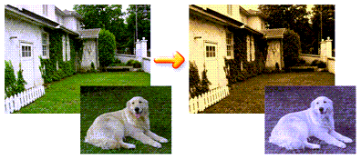
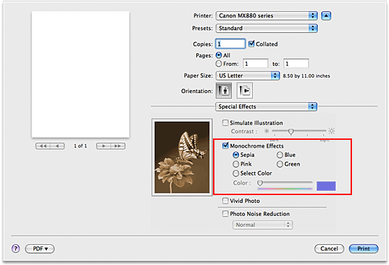

The procedure for performing Monochrome Effects is as follows:
-
Select Special Effects from the pop-up menu on the Print Dialog
-
Set Monochrome Effects
Check the Monochrome Effects check box and choose the color to be used.
When you use Select Color, move the Color slider to specify the color you want.
The selected color will be reflected in the preview image on the left side. -
Complete the setup
Click Print.
When you execute print, the image will be printed with a single color.
 Important
Important
-
When the Grayscale Printing check box is checked for Quality & Media, the Monochrome Effects check box appears grayed out and is unavailable.